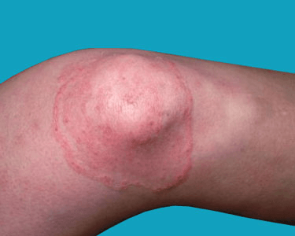

Ringworm of the body is a skin infection caused by a fungus.
“Ringworm” is a misnomer — the infection has nothing to do with worms. Its name comes
from the small, ring- or circle-shaped rash that appears on the body due to infection.
In ringworm of the body, the rashes appear on skin regions except for the scalp, groin,
palms of the hand, and soles of the feet.
The condition is common and highly contagious, but it’s not serious. It’s also sometimes
referred to as “tinea corporis” after the type of fungus that causes the infection.
There are several kinds of ringworm, including:
